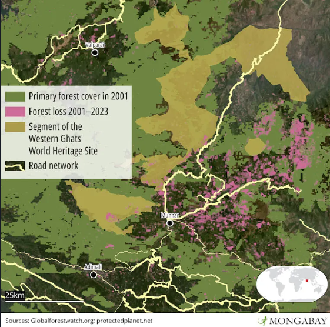
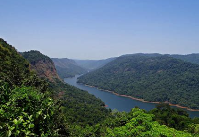
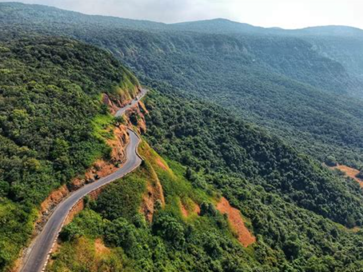
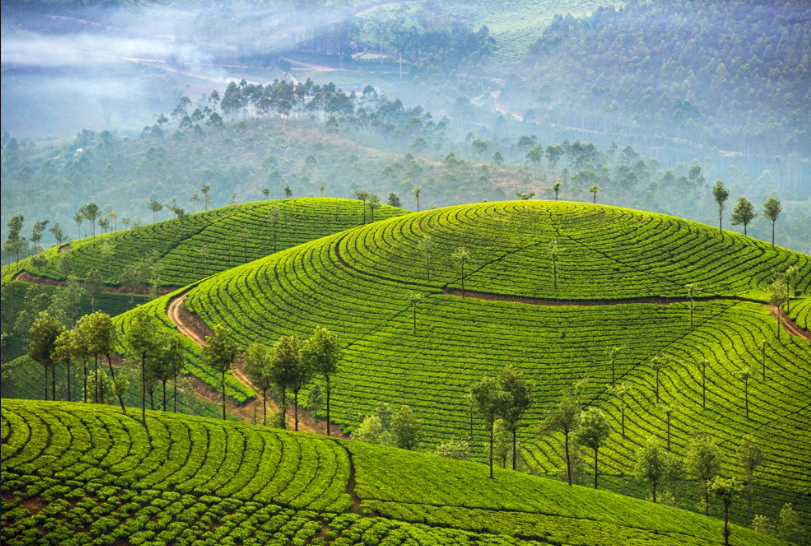
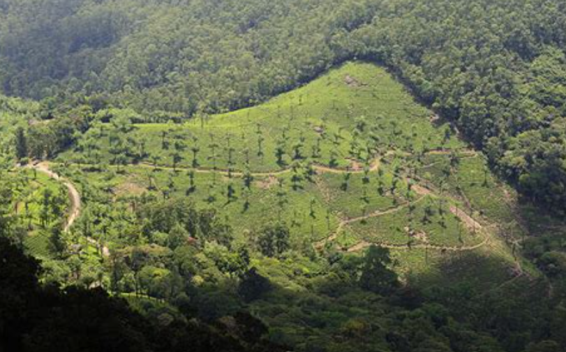

What Is Happening to the Western Ghats?
The Western Ghats are a mountain range that runs along the western side of India, stretching for approximately 1,600 kilometers across the states of Gujarat, Maharashtra, Goa, Karnataka, Kerala, and Tamil Nadu.
The region is internationally recognized as one of the world's eight "biodiversity hotspots." Its forests contain thousands of species, including many that are endemic to the Western Ghats, meaning they are found nowhere else on Earth.
Despite their ecological importance, many areas of the Western Ghats have been altered by agriculture, plantations, roads, settlements, mining, dams, and other forms of development.

What Is Habitat Fragmentation?
Imagine a large forest stretching continuously across a landscape.Animals can move through it, plants can spread, and different populations can interact with one another...
Now, imagine a road being constructed through the middle of that forest. Then a plantation is established nearby, followed by additional roads, buildings, or farmland. The forest may still exist, but it has been divided into separate patches.
This is known as habitat fragmentation. Fragmentation occurs when a continuous habitat is divided into smaller and more isolated areas.
Fragmentation becomes extremely dangerous when patches become too isolated for wildlife to move safely between them. A species may have enough habitat in total, but if that habitat is separated into disconnected pieces navigation becomes difficult.
Habitat loss removes habitat, and habitat fragmentation also hurts the relationships between the pieces of habitat that remain.
What Causes Fragmentation?
There is rarely one cause of habitat fragmentation. Different forms of land use gradually affect a connected landscape.
Agriculture
Forest has been converted for agriculture and plantations throughout the Western Ghats. Crops such as tea, coffee, rubber, eucalyptus, and other commercially valuable plants replace nativeforest.
Transportation
Roads and railways are important for communities' economies, but their construction leads to habitat fragmentation. Roads also increase the risk of wildlife-vehicle collisions.
Development
Buildings, dams, reservoirs, power infrastructure, and other development permanently change landscapes. The environmental effects tend to extend beyond the exact area where construction occurs.
Mining
Mining can remove vegetation and disturb soil and water systems. Where mining occurs close to remaining forest, it contributes to the isolation and degradation of surrounding habitats.
Why Is Fragmentation Dangerous?
The smaller and more isolated a habitat becomes, the more difficult it becomes for species to maintain healthy populations.
Wildlife Movement
Many animals need to travel between different parts of their habitat to find food, water, mates, and shelter. Large mammals such as Asian elephants travel considerable distances. When natural habitat is interrupted, these movements unfortunately increase the possibility of human-wildlife conflict.
Small and Isolated Populations
When populations become separated, individuals may have fewer opportunities to move between groups. Isolated populations are more vulnerable to environmental changes, disease, and other threats.
"Edge" Effects
Fragmentation also increases the amount of forest exposed to its surroundings. The edges of a forest thus experience different temperatures, light levels, wind conditions, and moisture than the interior. These changes then affect species depending on interior forest conditions.
Loss of Endemic Species
The Western Ghats contain many endemic species with restricted geographic ranges. When habitats are damaged, species with limited distributions are highly vulnerable.
This Is Also a Water Issue
The Western Ghats are also involved in the water systems of peninsular India.
The mountains influence the Indian monsoon and contain the headwaters of numerous rivers. Forest ecosystems regulate water movement by influencing infiltration, runoff, soil stability, and stream systems.
Changes to ecosystems affect everyone dependent on surrounding water systems.
The Landscape Under Pressure
These images represent parts of the conservation challenge facing the Western Ghats.

01 - Connected Forest
Continuous forest provides habitat and allows wildlife to move across larger areas.

02 - Roads
Transportation infrastructure creates barriers to wildlife movement.

03 - Land Conversion
Agriculture and plantations can replace native vegetation and separate remaining forest patches.
